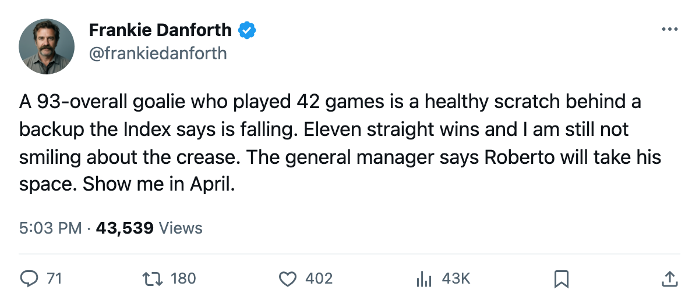
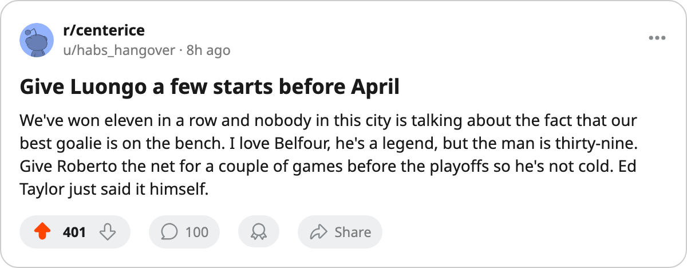

TOR
TORDANFORTH: The general manager told the league Roberto's time is coming, and I want to see what that looks like in a playoff game
Eleven straight wins, 33 points clear, and the best goaltender on this roster watches from the bench behind a 74-overall backup
 Frankie DanforthColumnist · Queen City Telegram
Frankie DanforthColumnist · Queen City Telegram
Code Green

Ed Taylor told The Tunnel's Jan Kowalczyk on Friday that when Ed Belfour decides he has played enough,  Roberto Luongo95 "will take up his space." The Toronto general manager added that Luongo "currently needed some rest" and "was struggling with a bit of an exhaustion." Then he said something I keep reading back: "back-to-back rounds are inevitably gonna exhaust one goalie," and in those moments a second man who is 90-plus is what saves a run.
Roberto Luongo95 "will take up his space." The Toronto general manager added that Luongo "currently needed some rest" and "was struggling with a bit of an exhaustion." Then he said something I keep reading back: "back-to-back rounds are inevitably gonna exhaust one goalie," and in those moments a second man who is 90-plus is what saves a run.
The second man is sitting.
Luongo has played 42 games. He is 25, carries a 93 overall in the Book, earns $1.60M with 2 years left. He did not dress Thursday at Boston. The G1 slot belongs to Belfour, who is 39, has a 92 overall, has played 36 games, and earns $6.50M on a contract with 1 year remaining. The G2 slot belongs to Mikael Tellqvist73, a 74 overall with 11 games, who sits 3 below his base on the Bureau's Development Index, one of the league's listed fallers this edition.
This is not an emergency. The Maple Leafs have won 11 in a row, sit at 124 points with a 360-179 goal differential, and the Northeast crown has been settled for weeks. The Panic Meter reads Green.
But watching a 93-overall goaltender watch from the bench is not the way to build a Cup. Belfour has been the man since the streak began, and he has been good. He is the man the schedule hands the net in the first round. I believe that. The question is April, the second series, the back-to-back games that Taylor himself flagged. A 39-year-old playing 7 games in 13 days, then doing it again against a rested opponent, is the number that bothers me.
Taylor said the club is willing to find room for Belfour under the salary cap next season. The cap has room. What it cannot buy is the 42 games a 25-year-old spent earning a starter's job only to watch the next 36 from a folding chair.
The Bureau's Development Index has 5 Toronto players among its risers, the most of any club this edition. The same Index has 1 Toronto player among its fallers, and it is the goaltender who carries the backup slot. Tellqvist at -3 is not the answer to a question the Leafs asked all year and never finished.
Eleven straight. 33 points clear of Boston. The phone in the front office still did not ring at the deadline and the second-centre column still says the same thing it has said since October. Those are problems for the summer. Tonight's problem is who stands in the crease when the schedule gets mean, and Taylor told the whole league what he believes. I want to see him believe it in a game that matters.

